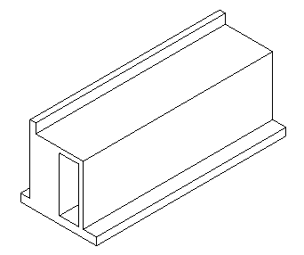

Until today, The Building Coder samples lacked
a demonstration of using the NewSweep method.
That was very kindly provided in yet another helpful answer by Frank @Fair59 Aarssen to the Revit API discussion forum thread on how to create a sweep with multiple closed loops in profile.
Let me also highlight an interesting TED talk on the topic of poverty versus universal basic income:
Question: I want to create a sweep with multiple closed loops in profile, like this:
I can draw the profile on the plane with model lines, but if I use it to create a sweep, it will report errors such as "cannot create sweep" without any other tips.
I have created sweeps using profiles with two loops successfully like this:

Is there any limitation, for example, the sweep profile can only have two closed loops at most, otherwise it will be wrong?
Later: After further testing, I still cannot create a sweep with three closed loops.
I tried orienting the two inner loops both clockwise and counterclockwise, but nothing helps.
Answer: Every loop needs to be a separate CurveArray!
I added Frank's correction to the test code provided and integrated it into The Building Coder samples module CmdNewSweptBlend.cs:
public Sweep CreateSweepWithMultipleLoops( Document doc ) { // Extrusion path CurveArray path = new CurveArray(); path.Append( Line.CreateBound( XYZ.Zero, new XYZ( 0, 5, 0 ) ) ); // Profile vertices: rectangle with two // rectangular holes XYZ p1 = new XYZ( 0, 0, 0 ); XYZ p2 = new XYZ( 10, 0, 0 ); XYZ p3 = new XYZ( 10, 15, 0 ); XYZ p4 = new XYZ( 0, 15, 0 ); XYZ a1 = new XYZ( 1, 5, 0 ); XYZ a2 = new XYZ( 3, 5, 0 ); XYZ a3 = new XYZ( 3, 10, 0 ); XYZ a4 = new XYZ( 1, 10, 0 ); XYZ b1 = new XYZ( 5, 5, 0 ); XYZ b2 = new XYZ( 7, 5, 0 ); XYZ b3 = new XYZ( 7, 10, 0 ); XYZ b4 = new XYZ( 5, 10, 0 ); CurveArrArray arrcurve = new CurveArrArray(); CurveArray curve = new CurveArray(); curve.Append( Line.CreateBound( p1, p2 ) ); curve.Append( Line.CreateBound( p2, p3 ) ); curve.Append( Line.CreateBound( p3, p4 ) ); curve.Append( Line.CreateBound( p4, p1 ) ); arrcurve.Append( curve ); curve = new CurveArray(); curve.Append( Line.CreateBound( a1, a4 ) ); curve.Append( Line.CreateBound( a4, a3 ) ); curve.Append( Line.CreateBound( a3, a2 ) ); curve.Append( Line.CreateBound( a2, a1 ) ); arrcurve.Append( curve ); curve = new CurveArray(); curve.Append( Line.CreateBound( b1, b4 ) ); curve.Append( Line.CreateBound( b4, b3 ) ); curve.Append( Line.CreateBound( b3, b2 ) ); curve.Append( Line.CreateBound( b2, b1 ) ); arrcurve.Append( curve ); Application app = doc.Application; SweepProfile profile = app.Create .NewCurveLoopsProfile( arrcurve ); Plane plane = Plane.CreateByNormalAndOrigin( XYZ.BasisZ, XYZ.Zero ); SketchPlane sketchPlane = SketchPlane.Create( doc, plane ); Sweep sweep = doc.FamilyCreate.NewSweep( true, path, sketchPlane, profile, 0, ProfilePlaneLocation.Start ); return sweep; }
Here is the result of running this code in a new family document:
Many thanks to Frank for this solution!
In case you are interested in the topic of universal basic income, you might find this TED talk quite illuminating: Poverty isn't a lack of character; it's a lack of cash, by historian Rutger Bregman, on June 13, 2017.
"Ideas can and do change the world," he says, sharing his case for a provocative one: guaranteed basic income. Learn more about the idea's 500-year history and a forgotten modern experiment where it actually worked – and imagine how much energy and talent we would unleash if we got rid of poverty once and for all.